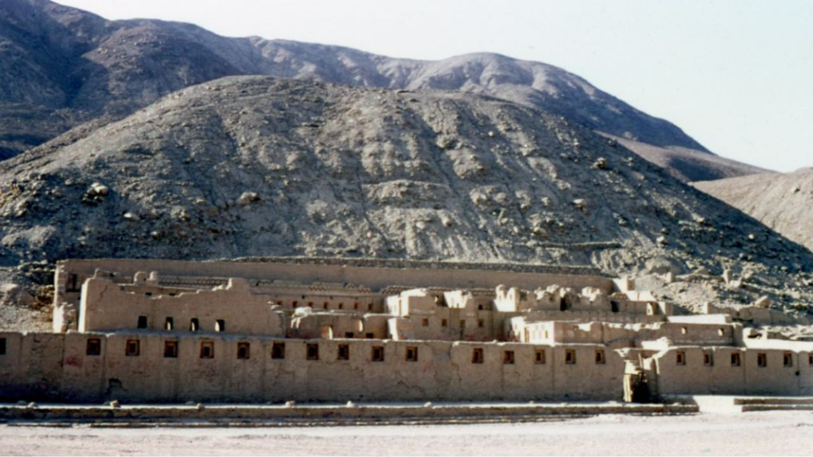
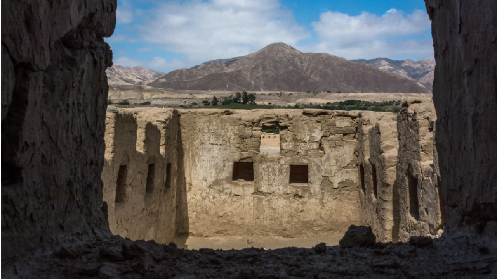
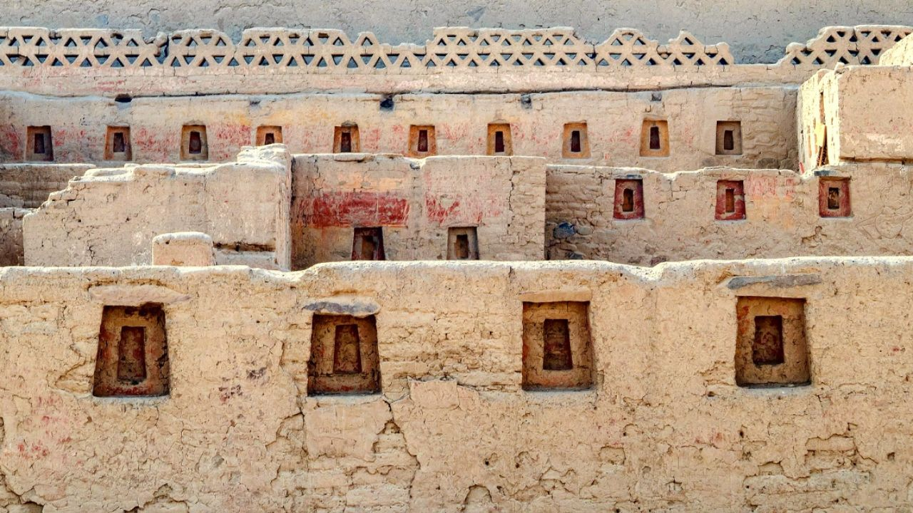

Excursión en Costa a Tambo Colorado



Descubre un Tesoro Inca
Desde el puerto San Martín
Detalle
Tambo Colorado (Rama Roja) se encuentra a 60 km de la ciudad de Paracas, este sitio arqueológico inca está bien conservado en el reino costero de los Incas. El palacio fue pintado de rojo, blanco y oro amarillo; la pintura amarilla acentúa en su mayoría los nichos trapezoidales. Tambo Colorado fue construido a finales del siglo XV y probablemente se utilizó para controlar el comercio e integrar a los lugareños en la religión inca. El palacio de Tambo Colorado está rodeado de sitios sagrados como templos, pirámides, plataformas para orar y una gran plaza de forma trapezoidal.
Incluye:
- Limitado a 18 participantes.
- Todas las entradas
- Recojo y regreso directamente desde el puerto
- Guía de habla inglesa/hispana
- Autobús turístico certificado (con aire acondicionado).
- Guía de habla inglesa/hispana
No Incluye:
- Extras y propinas.
8:00AM
Recojo desde el puerto.
9:30AM
Llegada al sitio arqueológico inca.
9:45AM
Tour en Tambo Colorado. Una caminata guiada por el palacio inca, incluido su interior. Esto dura 1 hora con paradas para fotos.
10:45AM
Caminata libre después del tour grupal.
11:15AM
Regreso a la ciudad de Pisco.
12:15PM
Breve parada en la Plaza de Pisco. Oportunidad para almorzar (por tu cuenta) o tomar un Pisco sour.
1:30PM
Viaje en autobús a la Reserva Natural de Paracas.
2:00PM
Recorrido por la Reserva Natural de Paracas. Este tour puede durar de 1.5 a 2 horas. La reserva está justo al lado del puerto de San Martín, por lo que el regreso es rápido.
3:45PM
Fin de nuestros servicios. Regreso al puerto.
Servicio de Cruceros 2025
- Agosto 27. → CORAL PRINCESS / Princess Cruises
- Octubre 20. → MS ZAANDAM / Holland America
- Noviembre 25. → MS OOSTERDAM / Holland America
- Diciembre 13. → SAPPHIRE PRINCESS / Princess Cruises
- Diciembre 17. → OCEANIA MARINA / Oceania Cruises
- Diciembre 18. → CELEBRITY ECLIPSE / Celebrity Cruises
- Diciembre 18. → SILVER NOVA / Silver Sea
- Diciembre 19. → SEVEN SEAS SPLENDOR / Regent Seven Seas
- Enero 15, 2026. → SILVER NOVA / Silversea
- Enero 16, 2026. → NORWEGIAN SUN / Norwegian Cruise
- Enero 16, 2026. → SEABOURN QUEST / Seabourn
- Enero 17, 2026. → AZAMARA ONWARD / Azamara Cruises
- Enero 29, 2026. → SERENADE OF THE SEAS / Royal Caribbean
- Enero 31, 2026. → AMADEA / Phoenix Reisen
- Febrero 03, 2026. → COSTA DELIZIOSA / Costa Cruises
- Febrero 27, 2026. → NORWEGIAN SUN / Norwegian Cruise
- Marzo 23, 2026. → SAPPHIRE PRINCESS / Princess Cruises
- Marzo 24, 2026. → MS OOSTERDAM / Holland America
- Marzo 30, 2026. → SILVER NOVA / Silver Sea
- Abril 11, 2026. → CELEBRITY ECLIPSE / Celebrity Cruises
- Abril 12, 2026. → AMERA / Phoenix Reisen
- Julio 25, 2025. → CORAL PRINCESS / Princess Cruises
Precio:
95$
Reservar Ahora